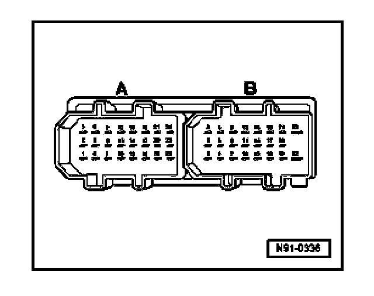
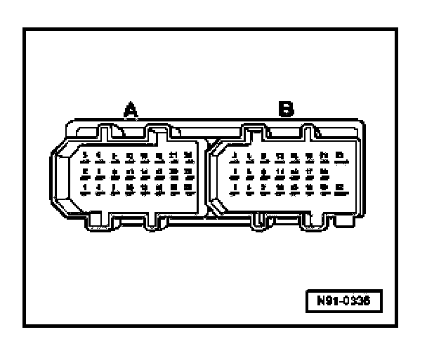

Amplifier For "Sound II", Multi-Pin Connector Assignments
Multi-pin Connector A, 24-pin
Multi-pin connector A, 24-pin:

1. Center speaker +
2. Center speaker -
3. not assigned
4. Right rear midrange speaker -
5. Right rear midrange speaker +
6. not assigned
7. Left rear midrange speaker -
8. Left rear midrange speaker +
9. Left front midrange speaker -
10. Left audio input +
11. Right audio input +
12. Left front midrange speaker +
13. Left/Right audio input (Ground)
14. Audio input - Navigation -
15. Right front midrange speaker -
16. CAN Bus - High
17. Audio input - Navigation +
18. Right front midrange speaker +
19. CAN Bus - Low
20. - not assigned
21. Left front treble speaker +
22. Right rear bass speaker -
23. Right front treble speaker +
24. Left front treble speaker -
Multi-pin connector B, 23-pin
Multi-pin connector B, 23-pin:

1. Right rear bass speaker +
2. Right front treble speaker -
3. Left rear bass speaker -
4. not assigned
5. Telephone audio input - (where applicable)
6. Left rear bass speaker +
7. not assigned
8. not assigned
9. Right front bass speaker +
10. not assigned
11. not assigned
12. Right front bass speaker -
13. not assigned
14. not assigned
15. Left front bass speaker +
16. Ground (GND) (terminal 31)
17. not assigned
18. Left front bass speaker -
19. Ground (GND) (terminal 31)
20. - Power supply Battery B+ (terminal 30)
21. Power supply Battery B+ (terminal 30)
22. Ground (GND) (terminal 31)
23. Power supply Battery B+ (terminal 30)